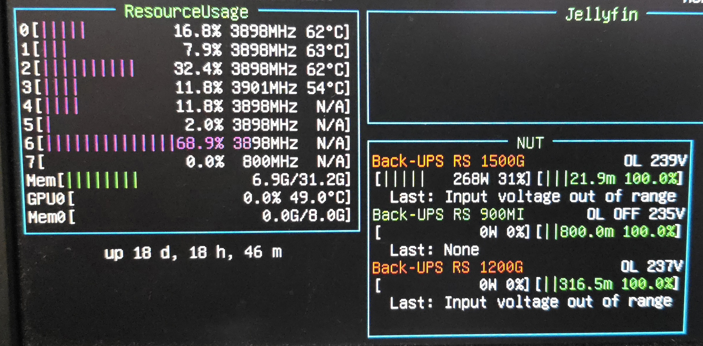
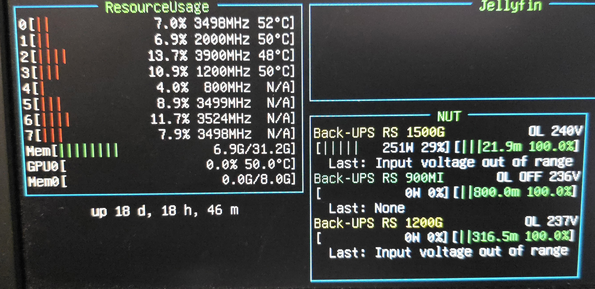
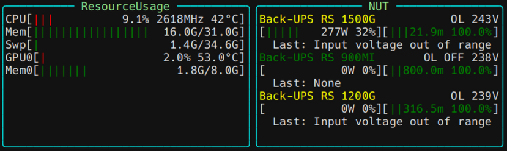
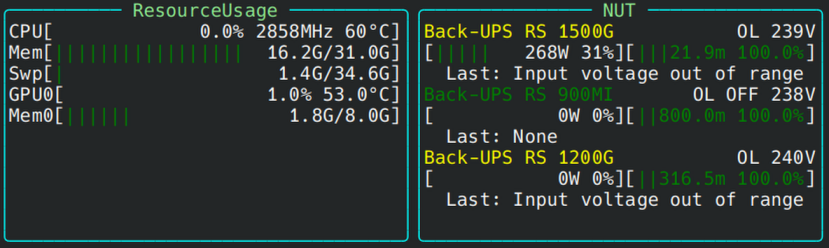

Configuration file
PyDashboard config file (refer to Getting stated for file location) contains all the settings of the modules and their positions on the screen. The syntax of the file is YAML (What is YAML?).
Configuration has four main sections, the example below can be used as a starting point for building your own configuration file.
ansi_color: false
defaults:
border: ["round", "cyan"]
title_color: lightgreen
refresh_interval: 1
grid:
columns: [10, 10, 10, 10]
rows: [9, 7, 3, 7, 5]
mods:
clock:
position:
top: 0
left: 3
height: 1
width: 1
Note
Keys can be written both in camelCase and snake_case and are case-insensitive (bORdeR is the same as border).
Modules and widgets¶
PyDashboard provides several modules, each one can be loaded to be displayed in a widget. Usually, when you want to
place a new widget, you just need to add a new entry with the module name under the mods: section.
Sometimes you may need to add multiple widgets based on the same module (for example multiple
cmdrunner widgets), in these cases you can use another name as key of the entry and then
specify the module type in the configuration of the widget.
If you don't like this syntax because it's too much verbose, you can also append a % to the module name, followed by
a custom name or identifier (it can even be only a number).
Positioning¶
The terminal can be considered like a screen with pixels, but in this case the "pixels" are the individual characters, for example a 80x50 terminal means 80 characters wide and 50 characters tall.
Getting terminal size
To know the size of the terminal that will host PyDashboard run stty -a.
The first row will output the required information.
speed 38400 baud; rows 50; columns 160; line = 0;
intr = ^C; quit = ^\; erase = ^?; kill = ^U; eof = ^D; eol = <undef>; eol2 = <undef>; swtch = <undef>; start = ^Q; stop = ^S; susp = ^Z; rprnt = ^R; werase = ^W; lnext = ^V; discard = ^O; min = 1; time = 0;
-parenb -parodd -cmspar cs8 hupcl -cstopb cread -clocal -crtscts
-ignbrk -brkint -ignpar -parmrk -inpck -istrip -inlcr -igncr -icrnl -ixon -ixoff -iuclc -ixany -imaxbel iutf8
opost -olcuc -ocrnl onlcr -onocr -onlret -ofill -ofdel nl0 cr0 tab0 bs0 vt0 ff0
-isig -icanon -iexten -echo echoe echok -echonl -noflsh -xcase -tostop -echoprt echoctl echoke -flusho -extproc
Using the characters as reference, placing the widgets on the dashboard can be done in two ways:
- grid (recommended)
- windowed
Note
Both methods can be used in the same file, but if both are set for a widget at the same time, the grid takes precedence.
Grid¶
This method splits the screen in chunks of characters.
This example splits the screen in 4 columns of 10 characters each and 3 rows of 5, 7 and 3 characters respectively, starting from the top left corner of the screen, the remaining space is left unused.----------------------------------------
| || || || |
| 1 || 2 || 3 || 4 |
| || || || |
----------------------------------------
----------------------------------------
| || || || |
| || || || |
| 5 || 6 || 7 || 8 |
| || || || |
| || || || |
----------------------------------------
----------------------------------------
| 9 || 10 || 11 || 12 |
----------------------------------------
Back to the example above, let's place the clock: inside the mods: section we define a clock:
section with a position: section that requires 4 parameters:
# ...
mods:
# ...
clock:
position: #place the widget in the square number 4
top: 0 #first row
left: 3 #fourth column
height: 1
width: 1
# ...
If you have a widget that you want to span across multiple rows/columns choose the first square and then define height and width:
----------------------------------------
| || || || |
| Clock || 2 || 3 || 4 | position:
| || || || | top: 0
---------------------------------------- left: 0
---------------------------------------- height: 1
| || || || | width: 1
| || || || |
| 5 || 6 || 7 || 8 |
| || || || |
| || || || |
----------------------------------------
----------------------------------------
| 9 || 10 || 11 || 12 |
----------------------------------------
----------------------------------------
| || || |
| Clock || 3 || 4 | position:
| || || | top: 0
---------------------------------------- left: 0
---------------------------------------- height: 1
| || || || | width: 2
| || || || |
| 5 || 6 || 7 || 8 |
| || || || |
| || || || |
----------------------------------------
----------------------------------------
| 9 || 10 || 11 || 12 |
----------------------------------------
----------------------------------------
| || || || |
| || 2 || 3 || 4 | position:
| || || || | top: 0
| |------------------------------ left: 0
| Clock |------------------------------ height: 2
| || || || | width: 1
| || || || |
| || 6 || 7 || 8 |
| || || || |
| || || || |
----------------------------------------
----------------------------------------
| 9 || 10 || 11 || 12 |
----------------------------------------
----------------------------------------
| || || |
| || 3 || 4 | position:
| || || | top: 0
| |-------------------- left: 0
| |-------------------- height: 2
| Clock || || | width: 2
| || || |
| || 7 || 8 |
| || || |
| || || |
----------------------------------------
----------------------------------------
| 9 || 10 || 11 || 12 |
----------------------------------------
Windowed¶
If you prefer working directly with widget sizes and absolute coordinates you can use the window:
section instead of position:, this enables you to place widgets with more freedom easily, even
overlapping them if you wish.
window: requires the following parameters:
|
|
y |
|
x \ /
-----------> *-------------------
| |
| |
| Clock | h
| |
| |
--------------------
w
Defaults and common settings¶
When applying certain settings, for example styles, you may need apply the same settings to every widget without having to repeat them many times across the file.
In the defaults: section you can define default values for each parameter accepted by a widget, then, when
initializing it, settings will be evaluated in this order (first takes precedence):
-
widget specific settings
-
defaults: -
default values defined in module code. See BaseModule
This example sets the default border to round, cyan, the title color to green and the refresh interval to 1 second
Color scheme¶
When running PyDashboard in a TTY without a graphical terminal, some colors may appear wrong due to different color schemes settings between GUI terminals (for example KDE Konsole) and the kernel text mode (the one used in systems without a GUI, like Ubuntu Server).
To fix this problem you can set ansi_color: true in the configuration.

ansi_color: false

ansi_color: true
Notice how red in ResourceUsage became magenta and yellow in NUT became orange with ansi_color: false.
This fix is not needed if PyDashboard is running in a GUI terminal, as it supports extended ANSI colors and this setting effectively does nothing, except for using the terminal background rather than painting it all black.

ansi_color: false

ansi_color: true